OP LAB GUIDE Introduction¶
OP(Onepiece4) lab is developed base on a small design with TSMC16FFC process. Lab guide can help you quickly familiar with OP enviroment.
- Content:
- OP lab overview
- OP core command introduction
- Matters need attention for LAB
- Project Setup (PL)
- Lib hash and liblist generation (PL)
- Block data setup (PL)
- Block run (block owner)
- Check output data
- Error Filter
- OP web interface
- Appendix A-1 (flow config introduction)
- Appendix A-2 (share and block config work mechanism)
- Appendix B (lib config work mechanism)
OP is under active development, and maybe have feature modification may affect OP LAB.
Welcome to try our OP platform LAB, and any questions or suggestions about platform,
please contact guanyu_yi@alchip.com , simonz@alchip.com
You can also download OP lab guide here op_lab_guide_v3.0.2.pdf
OP lab overview¶
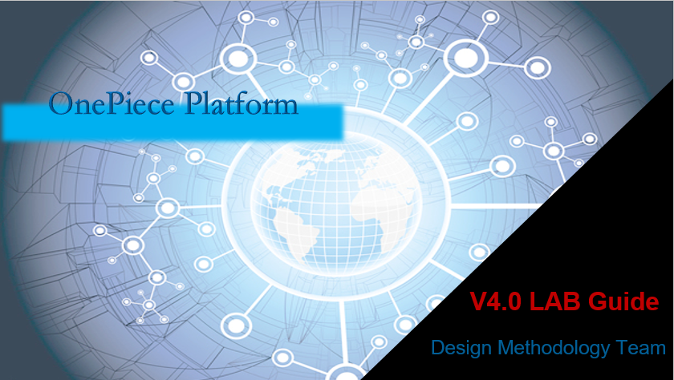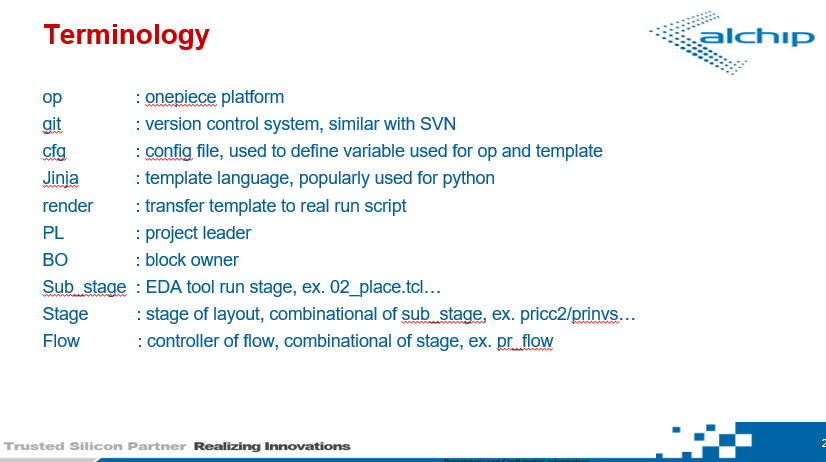
OP core command introduction¶
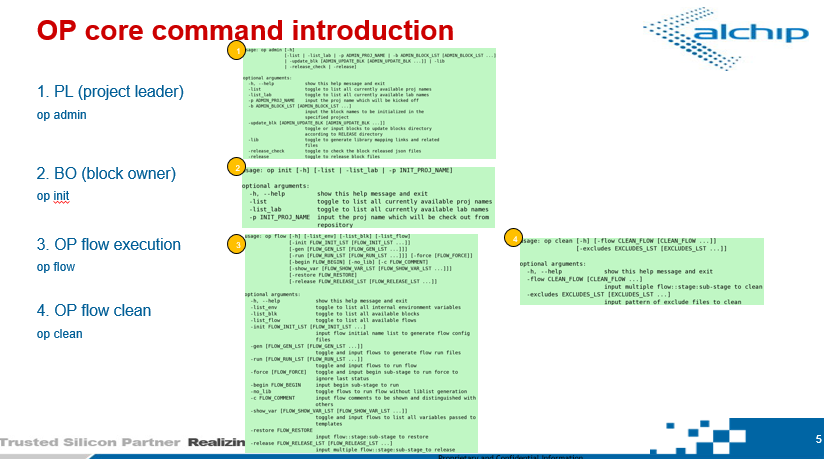
Matters need attention for LAB¶
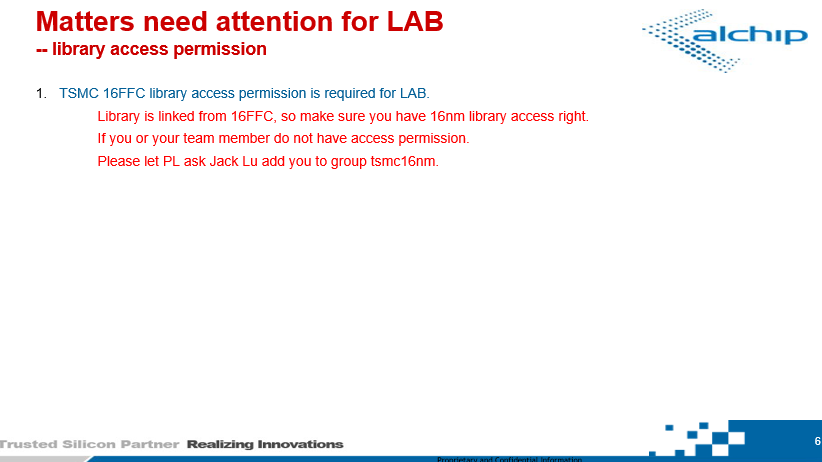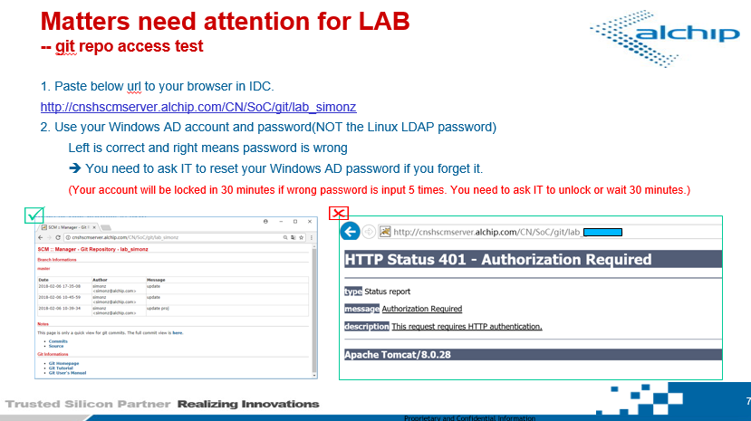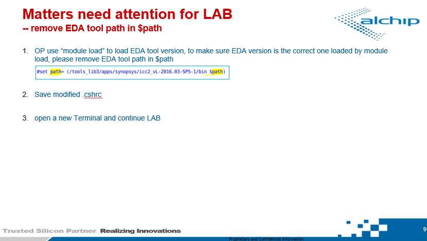
Project Setup (PL)¶
Lib hash and liblist generation (PL)¶
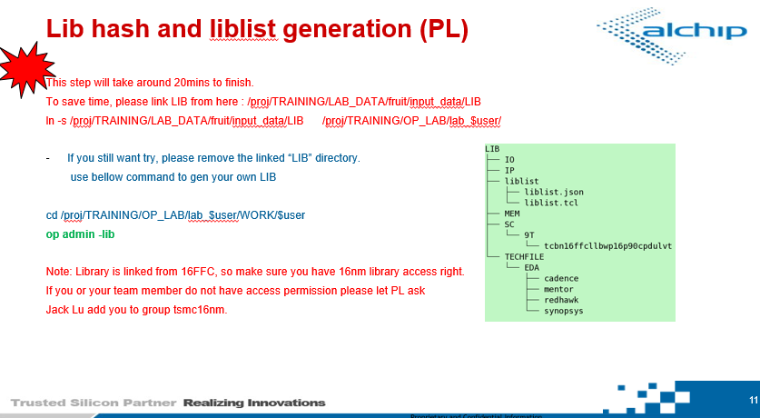
Block data setup (PL)¶
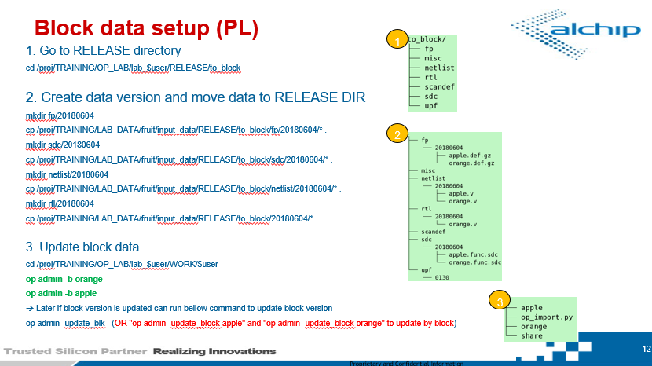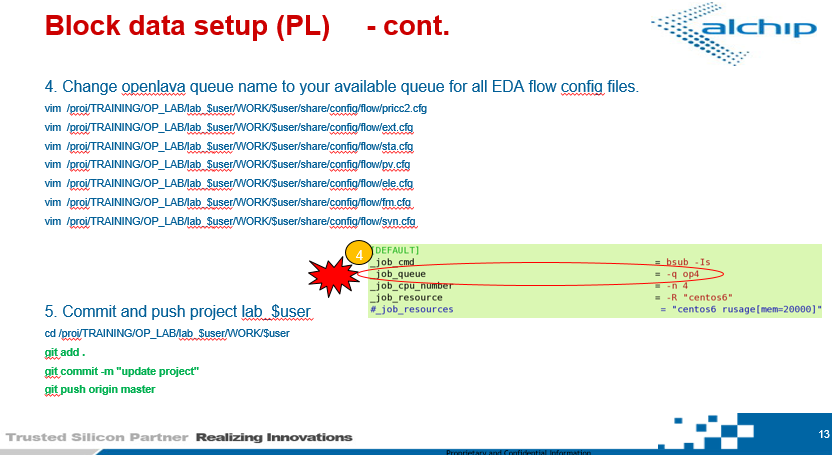
Block run (block owner)¶
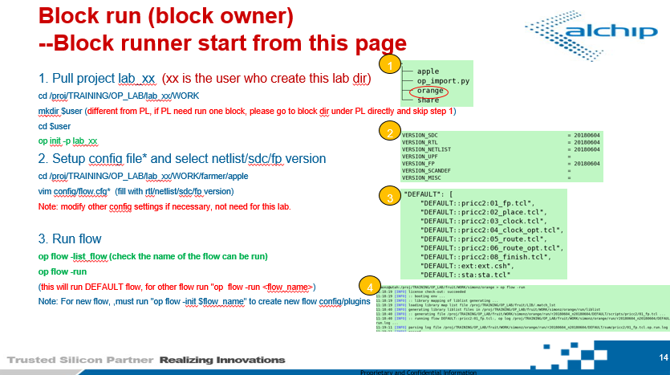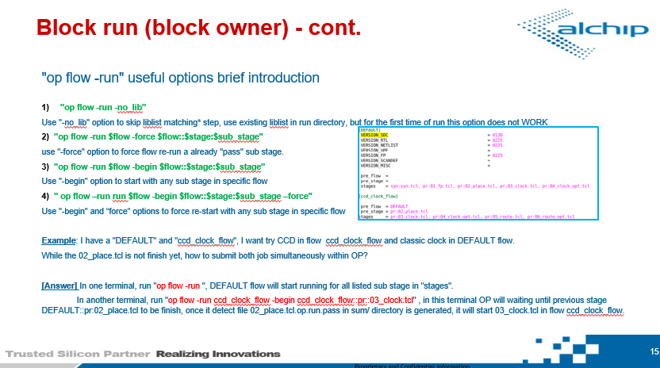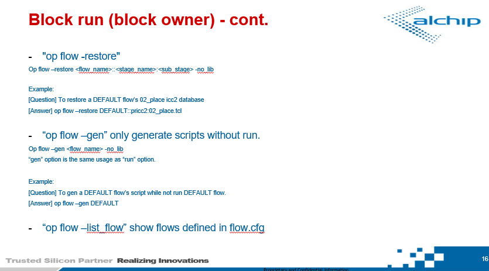
Check output data¶
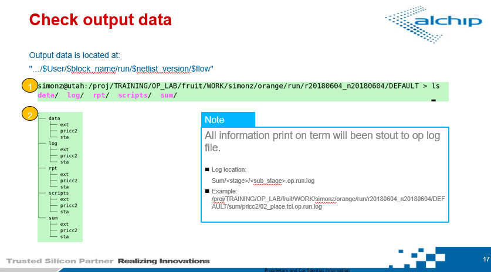
Error Filter¶
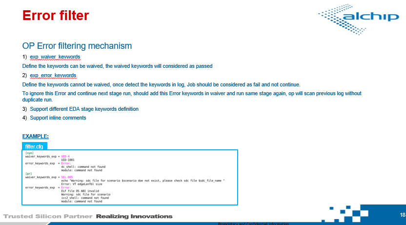
OP web interface¶
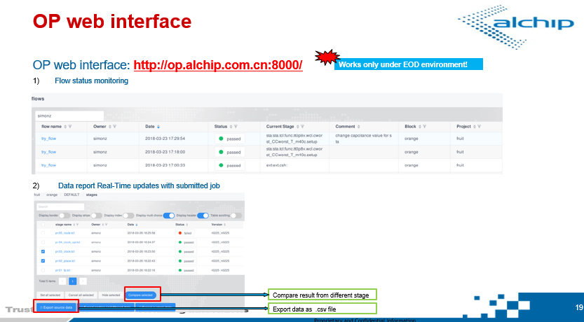